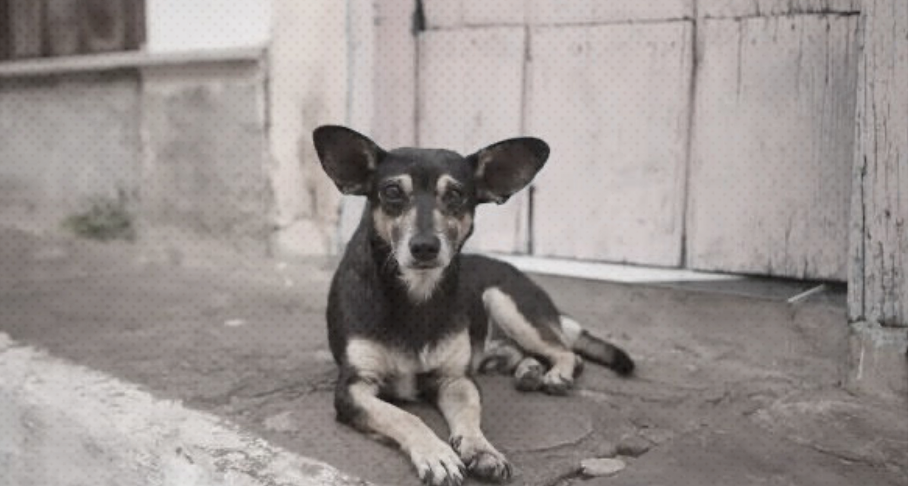

En esta sección podrás conocer a personas en situación de calle y a sus mascotas, sus historias, el vinculo que comparten y los sectores verdaderos heroes sin capa, ya que les entregan compania, protección y apoyo incondicional en su vida cotidiana.